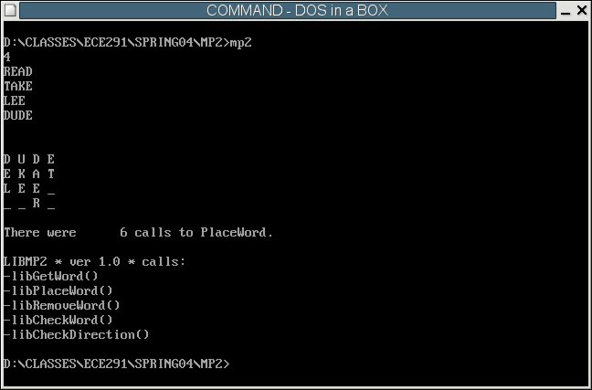

| Assigned | Thursday, February 12, 2004 |
| Due Date | Friday, February 27, 2004 |
| Purpose | User I/O, C-style Procedures, Recursion. |
| Points | 80 |
In this MP, you'll be creating a wordsearch puzzle (the fun ones you can find in the comic sections of newspapers) from a list of words that a user types in.

Your program will:
User input will be taken from the keyboard. As the user types characters, they will be added to the input buffer and displayed on the screen. The input buffer can hold maxLength characters; if the user attempts to type more characters, they should not be added to the buffer or displayed on the screen. Also, you should handle backspacing properly. If the user hits the Backspace key, a character should be removed from the buffer (allowed to be overwritten with the next typed character) and removed from the screen. Make sure that the user does not backspace before the beginning of the input buffer: this will incorrectly overwrite locations on the screen, and worse, it could potentially corrupt variables in memory. Last, you should also terminate the input loop when the user hits the Enter key. At this time, place a '$' at the end of the input string and return the number of characters entered.
The program stores a maximum of 10 words in an array in memory called Words. Each entry in this array consists of 14 bytes to be used for characters, and 2 bytes used to store the length of the word in that entry. The two bytes at the end of each entry allow us to very quickly check the length of the word stored at that location.
Words times 14 db 0
dw 0
times 14 db 0
dw 0
times 14 db 0
dw 0
times 14 db 0
dw 0
...
If we were to store the word "COMPUTER" in the first entry in the array,
bytes 0-7 would be "COMPUTER", byte 8 would be a '$' to mark the end
of the string, and bytes 14 and 15 would store the integer 8
Words db "COMPUTER$",0,0,0,0,0
dw 8
times 14 db 0
dw 0
times 14 db 0
dw 0
times 14 db 0
dw 0
...
When the user is done inputting words, they will type a blank line (i.e. they will
just hit ENTER without typing any text). The GetWord function will set
the very first byte of the word to be a '$'. This way, we know that when we see a
'$' as the first byte of a word, we have reached the end of our word list.
A wordsearch puzzle can be thought of as an N x N grid of letters. While the puzzle is being constructed, some of the locations in the grid are taken up by letters, and others are "blank." In this MP, when a location in the grid contains a '$' character, that location is "blank."
Our MP will support wordsearch grids from a very small 2 x 2 grid to a large 10 x 10 grid. To make this possible, the WordsearchArray array contains 100 bytes of '$' characters, some of which may go unused, depending on the size of the puzzle. The end-result of our program will be a 2-dimensional puzzle; however, while constructing the puzzle, we will have to deal with the WordsearchArray array as a 1-dimensional block of bytes. This means that positions in the wordsearch grid are simply linear offsets from the starting address of the WordsearchArray.
An example will help illustrate the point. Let's say we have a 5x5 wordsearch grid containing all blanks. We wish to access the character at the location row 3, column 1. This location is highlighted in yellow in the grid below:
0 1
2 3 4 0 __ __ __ __ __ 1 __ __ __ __ __ 2 __ __ __ __ __ 3 __ __ __ __ __ 4 __ __ __ __ __
0 1
2 3 4 0 0 1 2 3 4 1 5 6 7 8 9 2 10 11 12 13 14 3 15 16 17 18 19 4 20 21 22 23 24
The offsets range from 0 to (PuzzleSize*PuzzleSize - 1). (Size note: PuzzleSize*PuzzleSize will be calculated in Main and stored in the variable PuzzleSizeSq for your use). Any offset in this range represents a valid location within the grid.
So once we have a starting offset, how do you move around in the grid? I've redrawn the 5x5 grid we were using before, this time with offsets relative to the colored location (instead of relative to the upper left corner as in the previous grid).
0 1
2 3 4 0 __ __ __ __ __ 1 __ __ __ __ __ 2 -6 -5 -4 __ __ 3 -1 __ +1 __ __ 4 +4 +5 +6 __ __
So if our program supports a variable puzzle size (ranging from 2x2 to 10x10), how do you determine how many bytes to add or subtract? To make this easy, our program builds a lookup table that contains the offsets you need to add to a starting position in order to move diagonally up and left, straight up, diagonally up and right, straight left, straight right, diagonally down and left, straight down, and diagonally down and right. Each direction is encoded as a number from 0 to 7. These 8 different directions corresponding to the 8 word-sized values in the DirLookupTable array. This array is built for you by the Main procedure once the size of the puzzle is determined, so you can simply use it knowing it contains correct values.
Direction Index Value in table Up + Left 0 -N - 1 Up 1 -N Up + Right 2 -N + 1 Left 3 -1 Right 4 +1 Down + Left 5 +N - 1 Down 6 +N Down + Right 7 +N + 1
To clarify further, let's say we have the same 5x5 grid as before, and we are at row 3, column. This would make our starting offset 16, as we calculated above. We wish to move up and to the right of this character. "Up + Right" is direction 2 according to our above table. We look up the word-sized value at index 2 in DirLookupTable to determine the relative offset to add to our starting offset of 16. The DirLookupTable will give us a value of -N + 1, in this case -5 + 1 = -4. So we add -4 to our initial offset of 16 to obtain an offset of 12. As you can see from looking at the grid, this offset of 12 corresponds to row 2, column 2, the position up and to the right of our starting position at row 3, column 1.
To successfully create a crossword puzzle, we need to place all the words into the wordsearch grid. The general idea is as follows:
A possible solution is that once we find a word that cannot be placed, scrap the entire wordsearch grid and start over from the beginning with the first word. This is a rather naive approach, however, since it may be possible to only move around one or two words in the grid in order to place all of them.
Our program will use a more intelligent approach: recursively placing the words into the wordsearch grid. The reasoning behind this is as follows: assume there are 8 words to place. Your program successfully places 7 of the 8 words, but it exhausts all possible locations for the eighth word and cannot place it into the grid. What the program must now do is return to the seventh word and find a new location for it, since the current location does not allow the eighth word to be placed. So the program removes the seventh word and places it in a new location/direction. If it is successful, it moves on to the eighth word again. Hopefully, now we will be able to find a place for the eighth word. In this scenario, we have only altered one extra word, instead of redoing the entire wordsearch.
In order to support the removal of words, however, we cannot simple remove their characters from the WordsearchArray. Words can share letters with other words if they cross, and we have to keep track of this so we can remove a word properly from the WordsearchArray. To this end, we will use a FrequencyArray to keep a count of how many times each character is used. Consider the following wordsearch:
0 1
2 3 4 0 __ H __ __ __ 1 __ E __ __ __ 2 __ L __ __ __ 3 __ L __ __ __ 4 J O H N __
| WordsearchArray | FrequencyArray | ||||||||||||||||||||||||||||||||||||||||||||||||||||||||||||||||||||||||
|
|
When the program adds a word to the WordsearchArray (the given WriteWord function), it increments the corresponding usage counts in FrequencyArray. When you go to remove a word from WordsearchArray (the RemoveWord function which you must implement), you will decrement the usage count and check to see if it is 0. If it is 0, you can safely remove the letter from WordsearchArray and replace it with a '$'. If it is > 0, you must leave the letter in the WordsearchArray since it is being used by another word.
Here is the PlaceWord pseudocode:
Each of the subroutines you will write in this MP are C-Style procedures. Check out John Lockwood's
lecture on C-Style Procedures for
a description on how they work. Some notes on his lecture:
PlaceWord(wordToPlace*)
begin
// Set up local variables on the stack
// I would *strongly* recommend that you set up these variables
// on the stack, as it will make recursion easier
// The size of each variable is a WORD (2 bytes)
WORD DirectionCounter
WORD PositionCounter
WORD CurrentDir
WORD CurrentPos
// Keep track of how many recursive calls we are making
PlaceWordNumCalls = PlaceWordNumCalls + 1
// Base case for recursion
if wordToPlace[0] == '$' then
return 0
// Get a random starting location in
// the puzzle
CurrentPos = Rand(PuzzleSize * PuzzleSize)
// Try all possible positions in the puzzle,
// starting at location CurrentPos
for PositionCounter=0 upto (PuzzleSizeSq-1)
begin
// Get a random direction, 0 to 7
CurrentDir = Rand(8)
// Try all 8 directions, starting with CurrentDir
for DirectionCounter=0 upto 7
begin
// Call CheckWord to check this current position and direction
if (CheckWord(wordToPlace*, CurrentPos, CurrentDir)) == 0 then
// CheckWord was successful - the word can be placed here
WriteWord(wordToPlace*, CurrentPos, CurrentDir)
// Recursive call to PlaceWord, passing in the next word
// in the list
if PlaceWord(wordToPlace*+16) == 0
// Success, all words have been placed
return 0
else
// Failure, one of the words following this current word
// could not be placed. Remove this word and try a new
// direction and/or location
RemoveWord(wordToPlace*, CurrentPos, CurrentDir)
end if
end if
// % is the modulus operator
// It means divide the first operand by the second
// and take the REMAINDER as the result.
CurrentDir = (CurrentDir + 1) % 8
DirectionCounter = DirectionCounter + 1
end loop
// We just exited the inner, "Direction" for loop
// Try the next position in the grid
CurrentPos = (CurrentPos + 1) % PuzzleSizeSq
PostionCounter = PositionCounter + 1
end loop
// If we exit the "Position" for loop, we have tried
// every position and every direction in the grid and
// can still not place the word. Return -1 to indicate
// error
return -1
end
C-Style Procedures
short Foo(short Bar1, short Bar2)
{
short Temp1, Temp2;
...
return 0;
}
short is C's data type for a 16-bit (WORD sized = 2 byte) integer.
This function in assembly would look like this:
Foo:
push bp ; Save the value in bp
mov bp, sp ; This sets up a "stack frame." We can now use bp
; to access the parameters passed in to this function
sub sp, 4 ; This just allocated 4 bytes worth of temporary storage
; on the stack to store Temp1 and Temp2, each 2 bytes
...
...
...
add sp, 4 ; Clean up local variables
pop bp ; Restore old value of bp
mov ax, 0 ; ALL return values go in ax
ret
Calling this function and executing the first 3 instructions will create the following structure on the stack:
Address Value/Name ... ... bp + 6 Bar2 bp + 4 Bar1 bp + 2 Return address bp + 0 Old value of bp (that we just pushed) <---- bp bp - 2 Temp1 bp - 4 Temp2 <---- sp ... ...
So by subtracting 4 from sp, we made room for 4 bytes worth of data on the stack. The first word is accessible at [bp - 2] and the second word accessible at [bp - 4]. Before we return, we must "clean up" the local variables we just created. We do this by adding 4 back to sp, effectively deallocating storage for those two variables.
This assignment has six subroutines. You will receive credit by replacing each of these six subroutines listed below with your own code.
Each of the subroutines you will write in this MP are C-style. That means the inputs to the subroutines (if any) are passed on the stack. If the subroutine returns a value, the value will be in al or ax, depending on the size. Also, any general purpose register other than SI and DI may be overwritten: you do not have to preserve their vales, and you cannot assume the other subroutines (including the library subroutines) preserve them, either. Keep this in mind when writing your code - make sure that you preserve any necessary register values around subroutines calls that occur within other subroutines!
The size of the inputs, as well as the size of the return value, are included in each subroutine definition. Pointers are denoted with asterisks (*), whereas values do not have asterisks. If a subroutine does not have any inputs, void will be present in the parentheses. Similarly, if the subroutine does not return a value, it will be declared as void before the name of the subroutine.
| WORD GetWord(WORD *wordBuffer, WORD maxLength) |
|
|---|---|
| WORD PlaceWord(WORD *wordToPlace) |
|
| WORD CheckDirection(WORD wordLength, WORD position, WORD direction) |
|
| WORD CheckWord(WORD *wordToCheck, WORD position, WORD direction) |
|
| VOID RemoveWord(WORD *wordToRemove, WORD position, WORD direction |
|
; MP2 - Wordsearch Generator
; Your Name
; Date
;
; Zbigniew Kalbarczyk, Spring 2004
; Author: John King
; University of Illinois, Urbana-Champaign
; Dept. of Electrical and Computer Engineering
;
; Version 1.0
BITS 16
;====== SECTION 1: Define constants =======================================
CR EQU 0Dh
LF EQU 0Ah
ESC EQU 01Bh
SPACE EQU 020h
BKSPKEY EQU 08h
;====== SECTION 2: Declare external routines ==============================
; Declare external library routines
EXTERN kbdin, dspout, dspmsg, mp2xit, ascbin, binasc
EXTERN libGetWord, libRemoveWord, libCheckWord, libCheckDirection, libPlaceWord
; Declare local routines
GLOBAL Rand, PlaceWord, WriteWord, RemoveWord
GLOBAL GetWord, CheckWord, CheckDirection
; Make program variables global
GLOBAL WordsearchArray, FrequencyArray, CRLFString, UsageMessage, FailureMessage
GLOBAL Words, PuzzleSize, PuzzleSizeSq, R, DirLookupTable, CRLFString
GLOBAL PlaceWordNumCalls, CallsString, EndString
;====== SECTION 3: Define stack segment ===================================
SEGMENT stkseg STACK ; *** STACK SEGMENT ***
resb 64*16
stacktop:
resb 0 ; work around NASM bug
;====== SECTION 4: Define code segment ====================================
SEGMENT code ; *** CODE SEGMENT ***
;====== SECTION 5: Declare variables for main procedure ===================
; Our wordsearch grid
WordsearchArray times 10*10 db '$'
; Frequency grid
FrequencyArray times 10*10 db 0
; Some messages
UsageMessage db 'Input format:',CR,LF
db '',CR,LF
db '',CR,LF
db '',CR,LF
db '...',CR,LF
db '',CR,LF,'$'
FailureMessage db 'Unable to create wordsearch puzzle',CR,LF,'$'
; Puzzle size variables
PuzzleSize dw 0
PuzzleSizeSq dw 0
; Random number seed
R dw 1
; Words array
Words times 14 db 0
dw 0
times 14 db 0
dw 0
times 14 db 0
dw 0
times 14 db 0
dw 0
times 14 db 0
dw 0
times 14 db 0
dw 0
times 14 db 0
dw 0
times 14 db 0
dw 0
times 14 db 0
dw 0
times 14 db 0
dw 0
times 14 db 0
dw 0
times 14 db 0
dw 0
times 14 db 0
dw 0
times 14 db 0
dw 0
times 14 db 0
dw 0
times 14 db 0
dw 0
db '$'
; Direction lookup table
DirLookupTable dw 0,0,0
dw -1,1
dw 0,0,0
; More useful strings and things for display purposes
CRLFString db CR,LF,'$',0
CallsString db CR,LF,"There were ",'$'
EndString db " calls to PlaceWord.",CR,LF,'$'
TempBuffer times 8 db 0
; Variable to keep track of how many calls we make to PlaceWord
PlaceWordNumCalls dw 0
;====== SECTION 6: Program initialization =================================
..start:
mov ax, cs ; Initialize Default Segment register
mov ds, ax
mov ax, stkseg ; Initialize Stack Segment register
mov ss, ax
mov sp, stacktop ; Initialize Stack Pointer register
;====== SECTION 7: Main procedure =========================================
MAIN:
call ParsePuzzleSize ; Get puzzle size from the user
cmp ax, 1 ; The size must be > 1 for this to
jg .NoError ; be a valid wordsearch
mov dx, UsageMessage ; Size was invalid, print out the
call dspmsg ; usage message
jmp .CouldNotCreateWordsearch
.NoError
mov [PuzzleSize], ax ; Set up the PuzzleSize and
mul word[PuzzleSize] ; PuzzleSizeSq variables
mov [PuzzleSizeSq], ax
mov ax, [PuzzleSize]
not ax ; This next section of code sets up
mov [DirLookupTable], ax ; DirLookupTable so we can use it
inc ax ; in the rest of the functions
mov [DirLookupTable+2], ax
inc ax
mov [DirLookupTable+4], ax
neg ax
mov [DirLookupTable+10], ax
inc ax
mov [DirLookupTable+12], ax
inc ax
mov [DirLookupTable+14], ax
mov bx, Words
xor cx, cx
.InputLoop:
push bx ; Save bx and cx, all procedures are
push cx ; C-style, so they can (and will!)
; modify registers other than si and di
push word[PuzzleSize] ; C-style calling procedure:
push bx ; parameters passed on the stack
call GetWord ; GetWord(WORD *wordToWrite, WORD maxLength)
add sp, 4 ; remove parameters from the stack
pop cx
pop bx ; restore bx and cx
cmp ax, 0 ; Check return value, if it's 0 we've
je .DoneGettingWords ; reached the end of the list so move on
mov word[bx + 14], ax
add bx, 16 ; Otherwise set bx to point to the next
inc cx ; word
cmp cx, 10
jl .InputLoop
.DoneGettingWords
mov byte[bx], '$'
mov dx,CRLFString
call dspmsg
mov bx, Words
push bx
call PlaceWord ; Begin the calls to PlaceWord
add sp, 2
cmp ax, 0
jl .CouldNotCreateWordsearch
call PrintWordsearch ; Success; print the wordsearch
mov dx, CRLFString
call dspmsg
jmp .DisplayNumCalls
.CouldNotCreateWordsearch
mov dx, FailureMessage ; Failure; print a failure message
call dspmsg
.DisplayNumCalls
mov ax, [PlaceWordNumCalls] ; Print the # of calls to PlaceWord
mov bx, TempBuffer
call binasc
mov dx, CallsString
call dspmsg
mov dx, TempBuffer
call dspmsg
mov dx, EndString
call dspmsg
call mp2xit
;====== SECTION 8: Your subroutines =========================================
;=== Given Subrouties: ParsePuzzleSize, WriteWord, PrintWordSearch, and Rand
;;; WORD ParsePuzzleSize
;;; PURPOSE: Processes the parameters typed in on the command line
;;; INPUTS: NONE
;;; RETURNS: Puzzle size
ParsePuzzleSize:
push bp ; Set up stack frame
mov bp, sp
push si
.GoodToGo
mov bx, TempBuffer
mov ax, 2 ; The biggest puzzle we support is
push ax ; 10, so at most we need 2 digits
push bx ; from the user
call GetWord ; Get the puzzle size from the user
add sp, 4
mov bx, TempBuffer
call ascbin
cmp dl, 0
je .Return ; Leave the return value in ax
mov ax, -1
.Return
pop si
pop bp
ret
;;; VOID WriteWord(WORD *wordToWrite, WORD position, WORD direction)
;;; PURPOSE: Commits the word pointed to by bx to the wordsearch
;;; INPUTS: *wordToWrite = Pointer to the word to commit to the grid
;;; position = Linear offset starting position that word
;;; starts at in WordsearchArray
;;; direction = Direction the word is going in
;;; OUTPUTS: WordsearchArray, FrequencyArray are updated
WriteWord:
push bp
mov bp, sp
push si
push di
; Retrieve the parameters from the stack
mov bx, [bp + 4] ; [bp + 4] = *wordToWrite
mov di, [bp + 6] ; [bp + 6] = position
mov si, [bp + 8] ; [bp + 8] = direction
shl si, 1
.Top
mov al, [bx] ; Strings are '$'-terminated, so
cmp al, '$' ; when we hit a '$', we're done
je .Done
mov [WordsearchArray + di], al ; Update the Wordsearch array
inc byte[FrequencyArray + di] ; Update the frequency array
inc bx
add di, [DirLookupTable + si]
jmp .Top
.Done
pop di
pop si
pop bp
ret
;;; VOID PrintWordsearch(WORD mode)
;;; PURPOSE: Prints the wordsearch out, either with random
;;; letters filled in, or without
;;; INPUTS: mode = 0 for random letter mode
;;; 1 for blanks mode
;;; OUTPUTS: Wordsearch puzzle is printed to the screen
PrintWordsearch:
push bp
mov bp, sp
push si
xor si, si
xor cx, cx
.PrintLoop
mov dl, [WordsearchArray + si]
cmp dl, '$'
jne .NonRandom ; If the char is a '$', then
; that location in the grid
; is not occupied by a letter
cmp word[bp + 4], 0 ; Either print out an underscore
jne .Blank ; or a random letter
push cx
mov ax, 26
push ax
call Rand
add sp, 2
pop cx
mov dl, al
jmp .NonRandom
.Blank
mov dl, '_'
.NonRandom
call dspout ; Display the character
mov dl, ' '
call dspout
inc si
inc cx
cmp cx, [PuzzleSize] ; The inner loop displays each character
; in a row
jne .PrintLoop
cmp si, [PuzzleSizeSq] ; The outer one loops through all the
jge .Done ; rows
xor cx, cx
mov dx, CRLFString
call dspmsg
jmp .PrintLoop
.Done
pop si
pop bp
ret
; WORD Rand(maxNumber)
; PURPOSE: Generates random number
; INPUTS: maxNumber = range of random number
; (global) R = current stored random number
; RETURNS: random number in range 1 ... (maxNumber-1)
Rand:
push bp
mov bp,sp
mov ax, word[R]
mov bx, 2053
mul bx
add ax, 13849
adc dx, 0
mov bx, 0FFFFh
div bx
mov word[R], dx
mov ax, dx
mov dx, 0
div word[bp + 4]
mov ax, dx
pop bp
ret
; === Your own subrouties ===================================================
;;; You MUST implement the following five subroutines to earn full credit
;;; on this MP.
;;; WORD GetWord(WORD *wordBuffer, WORD maxLength)
GetWord:
push bp
mov bp, sp
push word[bp + 6]
push word[bp + 4]
call libGetWord
add sp, 4
pop bp
ret
;;; WORD PlaceWord(WORD *wordToPlace)
PlaceWord:
push bp
mov bp, sp
push word[bp + 4]
call libPlaceWord
add sp, 2
pop bp
ret
;;; VOID RemoveWord(WORD *wordToRemove, WORD position, WORD direction)
RemoveWord:
push bp
mov bp, sp
push word[bp + 8]
push word[bp + 6]
push word[bp + 4]
call libRemoveWord
add sp, 6
pop bp
ret
; CheckDirection(WORD wordLength, WORD position, WORD direction)
CheckDirection:
push bp
mov bp, sp
push word[bp + 8]
push word[bp + 6]
push word[bp + 4]
call libCheckDirection
add sp, 6
pop bp
ret
; CheckWord(WORD *wordToCheck, WORD position, WORD direction)
CheckWord:
push bp
mov bp, sp
push word[bp + 8]
push word[bp + 6]
push word[bp + 4]
call libCheckWord
add sp, 6
pop bp
ret